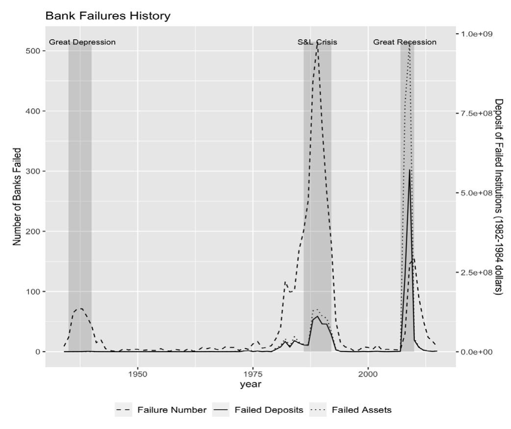
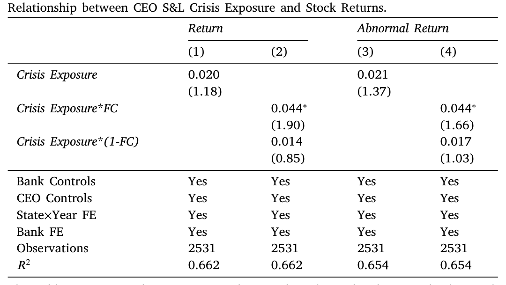
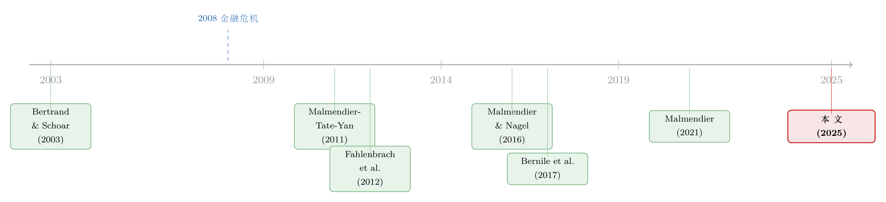

他们年轻时见过银行成片倒下——后来，这成了银行的护城河
本文读的是 Yu (2025, Journal of Financial Economics)：那些在职业生涯早期亲历过 1980 年代储贷危机的银行 CEO，日后掌舵的银行更少冒险，也更扛得住 2008 年的金融海啸。作者用 CEO 当年所在州的银行倒闭率来度量这份「危机记忆」，发现危机暴露每高出一个标准差，银行在危机期间的股票回报高出 4.2%，倒闭概率低 2.3 个百分点——相对于 6.6% 的无条件倒闭率，这是 34.8% 的下降。
1 引言：为什么有的银行没倒？
2008 年的金融危机，事后被反复讲述成同一个故事：金融机构对风险的过度暴露，最终引爆了系统。这个叙事大体是对的。但它有一个让人不安的尾巴——并不是所有银行都倒下了。在同一片风暴里，有的银行资产负债表被掀翻，有的却安然无恙地穿了过去。
于是一个自然的问题浮出水面：这些活下来的银行，它们的「不冒险」，到底是从哪里来的？
学术界对银行风险的来源研究得不可谓不多。有人归因于融资结构 (Brunnermeier, 2009)，有人归因于公司治理 (Fahlenbrach and Stulz, 2011)，还有人归因于风险文化 (Ellul and Yerramilli, 2013)。这些解释都对——但它们大多把银行当成一个没有面孔的机构。可监管者们偏偏一再强调，危机的根子在「领导力的失败」(Dudley, 2014)。问题是，关于银行的掌舵人本身如何塑造了银行的风险，实证证据却出奇地少。
这篇论文要补的，正是这块空白。它问了一个看似朴素、却很难回答的问题：
一个银行 CEO 年轻时亲历过的银行业危机，会不会在几十年后，悄悄改写他所管理的银行的命运？
作者把目光投向了 1980 年代的储贷危机 (savings and loan crisis, S&L crisis)。这是一个绝佳的实验场。它的规模之大，今天的人很难想象：至少 2920 家银行和储贷机构被关闭或接受了联邦存款保险公司 (FDIC) 的援助，纳税人最终为此埋单的成本超过 1240 亿美元。下面这张图把话说得很清楚——把 1930 年以来美国的银行倒闭潮放在同一条时间轴上，1980 年代那一峰，把大萧条和 2008 年都比了下去。

Figure 1: reports the total number of commercial banks, commercial
更妙的是，这场危机和 2008 年的危机长得像极了：都以房地产泡沫和信贷扩张为前奏，都以历史级的倒闭率和大规模政府救助收场，中间还都夹着资产甩卖、流动性枯竭与极端的市场动荡。换句话说，一个在 1980 年代被储贷危机灼伤过的年轻银行家，到了 2008 年，手里大概率握着一份别人没有的「剧本」。
这就是全文要反复讲透的那个核心：经历会内化为审慎，而审慎会在下一次危机里兑现成生存。
2 真正难的一步：怎么给「一段经历」称重？
把「CEO 的危机记忆」写进回归方程，听起来浪漫，做起来却卡在第一步——经历是看不见的，你怎么量它？
作者的办法是：顺着一个 CEO 的履历倒推回 1980 年代，找出他当年工作所在的州，再用那个州在储贷危机期间的银行倒闭率，作为他「危机暴露」的代理。具体而言，定义危机暴露 (Crisis Exposure) 为：CEO 在储贷危机期间所经历的、最高的州级年度银行倒闭率的对数。而这里的倒闭率，是倒闭机构的存款 / 上一年该州的银行总存款。
写成式子就是：
$$ \text{CrisisExposure}_{c} \;=\; \log\!\left(\max_{t\in[1985,1990]}\; \frac{\text{FailedDeposits}_{s,t}}{\text{TotalDeposits}_{s,t-1}}\right) $$
这里有两处用心，值得停下来咂摸一下。
第一，为什么取「州级」而不是「雇主级」？ 你当然也可以去算 CEO 当年那家银行自己的倒闭率。但这样一来，因果链就脏了：一个人当年待在一家烂银行，可能恰恰因为他本人就偏好冒险；那么日后的「审慎」到底是经历教会的，还是人本来就如此？州级冲击则更可能超出个人的掌控——你左右不了整个德州的银行倒了多少——于是它更干净地把「外生的危机强度」从「个人选择」里剥离了出来。
第二，为什么取「最高值 (max)」而不是平均？ 因为作者赌的是「灼伤效应」：真正在一个人心里刻下印记的，是他经历过的最惨烈的那一刻，而不是若干年的均值。这与经验学习理论 (Malmendier, 2021) 的精神一致——人们会回避那些曾经带来切肤之痛的行为。
这正是「经验学习 (experience-based learning)」与一般「信息学习」的区别：前者强调的不是你知道了什么，而是你亲身经历了什么。读到二手的危机故事，和自己在 1986 年眼睁睁看着隔壁银行被接管，是两件事。
接下来，一个自然的问题是：这个度量，真能区分出「保守」和「激进」的 CEO 吗？作者把危机暴露高于样本均值的 CEO 称作保守型 CEO (conservative CEOs)，然后看他们管的银行，是不是真的不一样。
3 识别策略：把「经历」和「选择」掰开
到这一步，最大的拦路虎是内生的 CEO–银行匹配。两个方向的质疑都很尖锐：
其一，会不会是保守的银行去挑了保守的 CEO？ 如果一家本就厌恶风险的银行，专门去聘那些经历过危机的人，那我们看到的相关性就只是「物以类聚」，而非「经历塑造行为」。
作者的应对是组合拳。首先，沿着 Bertrand and Schoar (2003) 的思路，回归里放进银行固定效应 (bank fixed effects) 加上随时间变化的州层面特征，把「银行选择 CEO」的那些可观测与不可观测的稳态因素吸收掉。基准设定大致是这样一个面板回归：
$$ Y_{i,t} \;=\; \alpha_i \;+\; \gamma_t \;+\; \beta\,\text{CrisisExposure}_{i,t} \;+\; \theta'X_{i,t} \;+\; \varepsilon_{i,t} $$
其中 \(\alpha_i\) 是银行固定效应，\(\gamma_t\) 吸收共同的时间趋势，\(X_{i,t}\) 是一组随时间变化的控制变量。识别的关键，是 \(\beta\) 来自同一家银行内部、因 CEO 更替而产生的危机暴露变化。
接着，作者去查动态效应：会不会在「保守 CEO 上任之前」，银行的风险就已经在往下走了？如果有这种预趋势 (pre-trend)，那因果解释就站不住。结果是没有——风险与政策的变化，确实是在保守 CEO 接手之后才出现的。
然后，真正关键的一步在于：作者抓住了因退休而触发的、准外生的 CEO 更替 (retirement-induced turnovers)。一个 CEO 到点退休、换上一位危机暴露完全不同的继任者，这种换人和「银行此刻想调整风险」基本无关。样本里一共有 92 次这样的 CEO 更替，来自 84 家银行；其中 55 次（来自 51 家银行）的两任 CEO，当年在储贷危机里待的是不同的州——这就给了识别最干净的那部分变异。
其二，会不会是 CEO 当年自己挑了高风险的州去工作？ 这是一个自选择问题。作者的破解办法极为漂亮：改用 CEO 的出生州在储贷危机期间的倒闭率来度量暴露。一个人没法选择自己出生在哪儿，所以「家乡的危机强度」是天上掉下来的。沿着「家乡偏好」这一支文献 (Yonker, 2017; Jiang et al., 2019; Lim and Nguyen, 2020)——它们说明 CEO 会通过信息与社会网络与出生州保持连接——作者预期，出生州在储贷危机中受创越重的 CEO，日后越规避风险。数据确实如此。
（关于银行「招什么样的人来管风险」这件事本身能否买到真本事，可参见《银行招谁来管风险：压力测试买来的，是「真本事」还是「过考试」？》。）
4 主要结果：审慎，落在了「最痛的那几处」
先说总量。控制掉银行异质性和州层面随时间变化的经济条件后，危机暴露越高的 CEO，系统性风险越低——无论用股票 beta、还是用 Acharya et al. (2017) 的边际预期损失 (marginal expected shortfall, MES) 来衡量；同时尾部风险更低，股价波动更小。这支持了一个朴素的判断：储贷危机的经历，确实改写了 CEO 对风险的态度，并被他施加到了银行身上。
但这篇论文最见功力的地方，不在「总量上更保守」，而在于保守得很有针对性。
如果「学习」是真的，那么一个被储贷危机灼伤过的 CEO，应该会在当年正是那几个引爆危机的领域格外小心。储贷危机的三大祸首是：利率风险、有风险的金融创新、信用风险。作者于是逐一去验：
- 利率风险：危机暴露越高，银行资产回报与利率冲击之间的协方差越低 (沿用 Drechsler et al., 2021 的度量)——也就是说，这些银行对利率波动更有韧性。
- 有风险的金融创新：经历过储贷危机最惨烈一面的 CEO，其银行对衍生品交易这类「风险创新」的暴露更低。
- 信用风险：以不良贷款 (non-performing loans) 占比衡量的信用风险更低。
更进一步，作者发现这些效应在当年就身居 C 级高管位置的 CEO 身上更强——因为他们当年的危机体验更切身、更刻骨。这正是「领域特定学习 (domain-specific learning)」最有说服力的指纹：不是变得笼统地胆小，而是在自己被烫过的地方格外当心。
这是全文我最欣赏的一笔。一个泛泛的「保守」结论，很容易被「风险厌恶型的人本来就保守」解释掉；但「保守恰好落在引发上一场危机的那三个口子上」，就很难用一般的性格差异来解释了。它把「学习」从「天性」里拧了出来。
那么，这份审慎在 2008 年兑现了吗？兑现了，而且量级不小：
- 危机回报：危机暴露每高一个标准差，银行在危机年份的股票回报高出
4.2%。换个说法更直观——一位经历过7%州倒闭率（危机暴露第 75 百分位）的 CEO，其银行的危机回报，比经历过3.1%倒闭率（第 25 百分位）的 CEO 高出3.1个百分点。 - 存活概率：沿用 Fahlenbrach et al. (2012) 的倒闭定义，危机暴露每高一个标准差，银行在 2007–2009 年间倒闭的概率低
2.3个百分点。而样本银行同期的无条件倒闭概率是6.6%，所以这相当于倒闭风险下降了34.8%。 - 经营层面：保守 CEO 的银行资产回报 (ROA) 更高，房地产贷款占比更低，并且囤积了更多高质量的流动性资产——又一次，恰好落在储贷危机中「鲁莽放贷」和「流动性蒸发」这两处旧伤上。
（危机里「主动求变」到底值多少钱，是个独立而有趣的问题，可对照《先举手的人：危机里，「主动适应」到底值多少钱？》。）
5 反转：会不会根本不是「学习」？
到这里，故事似乎已经讲完。但一个严谨的读者会立刻反问：这些相关性，真的非得用「学习」来解释吗？ 作者很诚实，逐一把替代解释摆上台面，再一一拆掉。
反转一：会不会是「过度保守毁掉了股东价值」？ 也许这些 CEO 出于个人职业忧虑 (career concerns)，把风险压到了低于最优的水平，看似稳健，实则在替自己保命、损害股东。如果是这样，我们应该看到这些银行的经营业绩和股票回报更差。但数据说不：保守 CEO 的银行，经营业绩和股票回报并没有更低。审慎没有以牺牲价值为代价。
反转二：会不会是「薪酬激励」在背后操盘？ 也许危机暴露恰好和某种薪酬结构相关，是薪酬合同——而非经历本身——驱使 CEO 偏好某个风险水平。作者于是去查危机暴露与薪酬方案的关系，结论是：在数据可得的子样本里，两者之间不存在任何统计上显著的关联。如下表所示，无论怎么切薪酬，都看不到危机暴露在其中留下痕迹。

Table 9: 5.1.2. Executive compensation
两个最自然的替代解释都被堵死，「学习」假说反而更站得住了。
最后一道防线：会不会是银行专门挑保守 CEO 来「应对」2008 年的危机？作者的回应是把样本聚焦到早在危机爆发前很久就已上任、并一路扛过危机的 CEO。既然这些银行当年不可能预知 2008 年会来、何时来，那么危机暴露在这批银行间的分配，就和它们「很久以前的招聘决策」近乎正交。结论依旧稳健。
6 文献脉络：从「信念学习」到「领导力学习」
把这篇论文放回它所在的那条河流里，脉络其实很清晰。
最上游，是经验学习 (experience effects) 这一支。它的核心洞见是：人不是冷冰冰的贝叶斯更新器，亲历过的事会对信念和行为留下不成比例的烙印。这条线在 Malmendier and Nagel (2016) 那里被讲得最透——他们发现个人的通胀预期，被自己一生中亲历过的通胀经历系统地塑造。再往后，Malmendier (2021) 把这整支文献做了集大成的综述。
与此并行的，是高管个人特征如何影响公司政策这一支。Bertrand and Schoar (2003) 开创性地证明了「经理人风格」真实存在且可测量；Malmendier, Tate, and Yan (2011) 把早年经历（如大萧条、服役）与高管的财务决策连了起来；Bernile, Bhagwat, and Rau (2017) 则发现早年灾难经历会非线性地改变 CEO 的冒险倾向——有意思的是，这篇论文的机制方向与之相反：储贷危机让 CEO 更审慎，而非更爱赌。

还有一支，是银行的「机构记忆」。Bouwman and Malmendier (2015) 发现挺过资本不足时期的银行日后会持有更高的权益比率、少冒险；Fahlenbrach et al. (2012) 则证明 1998 年 LTCM 危机里表现差的银行，2008 年照样表现差。但这两支强调的是机构层面的经验惯性。
而这篇论文卡位的地方，恰恰在三条河流的交汇处：它不谈机构记忆，而谈领导者个人的危机记忆；它把「经验学习」第一次扎实地用在了被前人系统排除在外的银行 CEO 身上（此前的经验学习研究，除 Greenwood and Nagel (2009) 关注基金经理外，几乎都在研究个人投资者）；并且，它是最早因果地证明「专业人士从过往危机中的学习，能让其未来所在机构的下一场危机表现更好」的论文之一。这，就是它的贡献坐标。
评论与延伸（Q&A + 研究方向）
(a) 几个可能的疑问
Q：用「州级倒闭率」度量个人经历，会不会太粗？同一个州里，不同人的体验天差地别。
会损失一些个体层面的精细度，但这恰恰是作者要的「钝」。雇主级度量更精细，却也更脏——它和个人的风险偏好纠缠在一起。州级冲击换来的是外生性：你左右不了整个州倒了多少银行。精度与干净，作者选了后者，对识别而言是正确的取舍。
Q：这到底是「学习」，还是单纯的「风险厌恶型的人聚到了一起」？
这正是全文的命门，作者用「领域特定性」来回应：保守不是均匀地铺开，而是精准地落在利率风险、风险型金融创新、信用风险这三处——恰好是储贷危机的三大祸首。一般的风险厌恶解释不了这种「哪儿烫过躲哪儿」的针对性。再加上退休触发的准外生换人和出生州的安慰剂式检验，「学习」比「选择」更可信。
Q：4.2% 的危机超额回报，会不会只是「低 beta 的股票在危机里本来就跌得少」的机械结果？
部分是，但不全是。低系统性风险确实是机制的一环——保守 CEO 的银行 beta 更低、MES 更低，危机里自然更抗跌。但作者同时给出了经营层面的证据：更高的 ROA、更低的房地产贷款占比、更厚的流动性垫子，以及更低的实际倒闭概率。这些是真实的资产负债表韧性，而不仅是一个 beta 的算术。
Q：退休换人真的「外生」吗？董事会的换人时点，难道完全与银行处境无关？
严格说没有任何换人是 100% 外生的。但「到龄退休」相比「业绩不佳被炒」或「战略调整主动换人」，与银行当下风险意图的相关性要弱得多。作者还验证了换人前不存在预趋势，这进一步缓解了「换人只是反映了银行早已开始的调整」这一担忧。称它「准外生」是恰当的。
Q：样本只有 336 家上市银行、且止于 2009 年，外部有效性如何？
这是上市 BHC 的样本，结论不必然推广到小型社区银行或非上市机构。止于 2009 是有意的——2008 后监管地形剧变（业务范围、核心资本要求都变了），再往后混入会污染识别。作者也做了 1995–2015 的替代样本、大小银行分组等稳健性检验，结论稳定。但「大银行、上市、活到 1995 年之后」这组筛选本身，意味着读数对应的是幸存且较大的银行。
Q：如果储贷危机让 CEO 更保守，为什么 Bernile et al. (2017) 发现早年灾难让 CEO 更爱冒险？两者矛盾吗？
不矛盾，反而互补。Bernile 等研究的是早年生活中的自然灾害这类经历，其与「死亡显著性」「钝感化」相关的心理机制，可能推向更高的风险容忍。而本文是职业生涯早期、领域之内的行业危机——你亲眼看到鲁莽放贷的下场。经历的领域和性质不同，学习的方向自然可以相反。这恰恰说明「经验效应」不是一个符号固定的常数。
(b) 几个可能的研究问题与提案
1. 把「危机记忆」搬到公司债与信用市场的定价上
【经济故事】既然经历过储贷危机的银行 CEO 会压低信用风险，那么债券市场是否「看见」并为这份审慎定价？经历过危机的 CEO 所在银行，其发行的债券利差是否更低、评级迁移是否更平缓？机制是 CEO 的审慎降低了违约的左尾。 【可行性】中。需要把本文的 CEO 危机暴露度量与
TRACE债券交易、Mergent FISD发行条款、评级数据合并。识别上可沿用本文的退休触发换人，看换人前后同一发行人的利差变化。难点是银行发债样本相对集中，样本量可能偏小。
2. 外资持有人会不会「中和」掉本土 CEO 的危机记忆？
【经济故事】如果一家银行的股东以经历过储贷危机的本土机构为主，CEO 的审慎可能被强化；而若股东是没有这段记忆的外国投资者，治理压力可能把银行重新推向冒险。这把「经验学习」从 CEO 一端扩展到「投资者—管理层」的互动。 【可行性】中。需要
13F与跨境持仓数据刻画外资比例，与 CEO 危机暴露交乘。识别偏弱（持股结构内生），更适合作为异质性证据而非因果主张。
3. 危机记忆与流动性囤积：是「保险」还是「过度谨慎」？
【经济故事】本文发现保守 CEO 的银行囤积高质量流动性资产。一个未解的问题是：这份流动性垫子，在平静时期是否拖累了放贷与盈利（即审慎的「机会成本」）？把危机期的收益与平静期的成本放在同一杆秤上，才能判断学习究竟是优化还是过度反应。 【可行性】高。
FR Y-9C已含流动资产与贷款明细，本文样本可直接延展。识别上比较平静期与危机期的 ROA/放贷增速对危机暴露的不同斜率即可，数据现成。
4. 记忆会随时间「衰退」吗？
【经济故事】经验效应若是真的，它应当随着时间推移而衰减——危机过去越久，CEO 的审慎是否越淡？或者反过来，反复被新危机「提醒」会不会让记忆重新被激活？这能把静态的「暴露」升级为动态的「记忆折旧」。 【可行性】中高。把危机暴露与「距储贷危机的年数」交乘，在本文面板内即可检验衰减斜率。难点是 CEO 任期与「年数」高度共线，需要小心区分任期效应与记忆衰退。
参考文献
- Acharya, V.V., Pedersen, L.H., Philippon, T., Richardson, M. (2017). Measuring systemic risk. Review of Financial Studies 30(1), 2–47.
- Bernile, G., Bhagwat, V., Rau, P.R. (2017). What doesn't kill you will only make you more risk-loving: Early-life disasters and CEO behavior. Journal of Finance 72(1), 167–206.
- Bertrand, M., Schoar, A. (2003). Managing with style: The effect of managers on firm policies. Quarterly Journal of Economics 118(4), 1169–1208.
- Bouwman, C.H., Malmendier, U. (2015). Does a bank's history affect its risk-taking? American Economic Review 105(5), 321–325.
- Drechsler, I., Savov, A., Schnabl, P. (2021). Banking on deposits: Maturity transformation without interest rate risk. Journal of Finance 76(3), 1091–1143.
- Ellul, A., Yerramilli, V. (2013). Stronger risk controls, lower risk: Evidence from US bank holding companies. Journal of Finance 68(5), 1757–1803.
- Fahlenbrach, R., Prilmeier, R., Stulz, R.M. (2012). This time is the same: Using bank performance in 1998 to explain bank performance during the recent financial crisis. Journal of Finance 67(6), 2139–2185.
- Fahlenbrach, R., Stulz, R.M. (2011). Bank CEO incentives and the credit crisis. Journal of Financial Economics 99(1), 11–26.
- Greenwood, R., Nagel, S. (2009). Inexperienced investors and bubbles. Journal of Financial Economics 93(2), 239–258.
- Jiang, F., Qian, Y., Yonker, S.E. (2019). Hometown biased acquisitions. Journal of Financial and Quantitative Analysis 54(5), 2017–2051.
- Malmendier, U. (2021). Experience effects in finance: Foundations, applications, and future directions. Review of Finance 25(5), 1339–1363.
- Malmendier, U., Nagel, S. (2016). Learning from inflation experiences. Quarterly Journal of Economics 131(1), 53–87.
- Malmendier, U., Tate, G., Yan, J. (2011). Overconfidence and early-life experiences: The effect of managerial traits on corporate financial policies. Journal of Finance 66(5), 1687–1733.
- Yonker, S.E. (2017). Do managers give hometown labor an edge? Review of Financial Studies 30(10), 3581–3604.